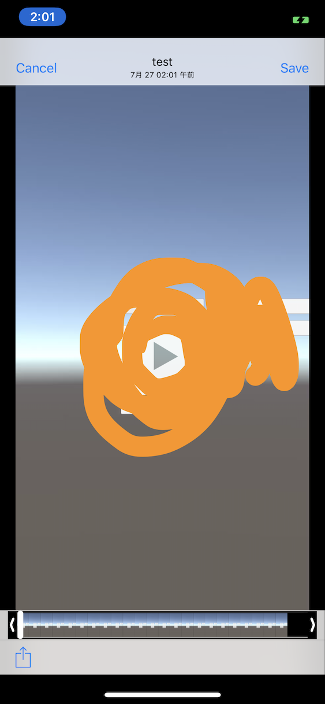

ReplayKitWrapper
概要
Unity2017を使っているプロジェクトで、iOS11上で動かす際にUnityのReplayKitを使うとクラッシュする。
そのため用意した。
あとUnity2018でもクラッシュはしないもののiPhoneXで画面レイアウトがクソダサになるという辛いところがあり、
このプラグインは2018でもいい感じのビューを提供してくれる。
ReplayKitWrapper
https://github.com/sassembla/ReplayKitWrapper
わあでけえ、、
